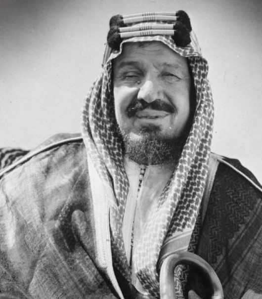

الملك عبدالعزيز بن عبدالرحمن ال سعود....رحمه الله

هو مؤسس المملكة العربية السعودية الحديثقة وأول ملوكها
حياة الملك عبدالعزيز
| الميلاد |
الوفاة |
| يناير 15, الرياض 1875 |
نوفمبر9 1953,الطائف |
بعض أهم إنجازات الملك عبدالعزيز رحمه الله
- توحيد معظم مناطق و أقاليم الجزيرة العربية تحت راية المملكة العربية السعودية
- إنشاء العديد من الوزارات ؛ كوزارة الخارجية التي ترأسها الأمير فيصل بن عبدالعزيز لأول مرة.
- الدفاع التي كانت تدعى وكالة الدفاع سابقا,بالإضافة إالى وزارة الداخلية
- ووزارة المواصلات أيضا تطبيق نظام لإدارة الحج و تأسيس مديرية الحج العامة
- ظهور أول نظام للطرق و المباي بالإضافة إالى نظام التليفونات
- تأسيس الخطوط الجوية السعودية , ربط الرياض بالدمام بواسطة خط لسكة الحديد